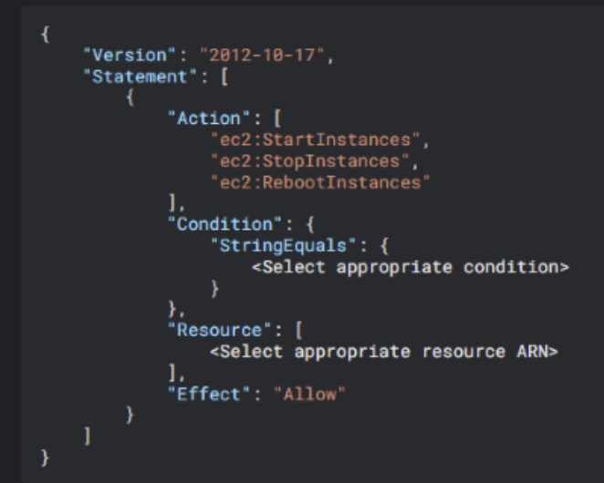

Q3 of 19
For the AWS IAM policy displayed below, please select the appropriate condition and resource that will allow a user to start/stop/reboot all instances in the Staging Environment in the US N.Virginia region.

Options
1. Condition : "ec2:ResourceTag": "Environment/Staging"
Resource: "arn:aws:ec2:us-east-1:123456789012:instance/**
2. Condition: "ec2: ResourceTag/Environment*: "Staging"
Resource : "arn:aws:ec2:123456789012:us-east-1:instance/**
3. Condition: "ec2: Resource Tag/Environment": "Staging"
Resource : "arn:aws:ec2:us-east-1:123456789012:instance/**
4. Condition : "ec2:ResourceTag": "Environment/Staging"
Resource : "arn:aws:ec2:123456789012:us-east-1:instance/**